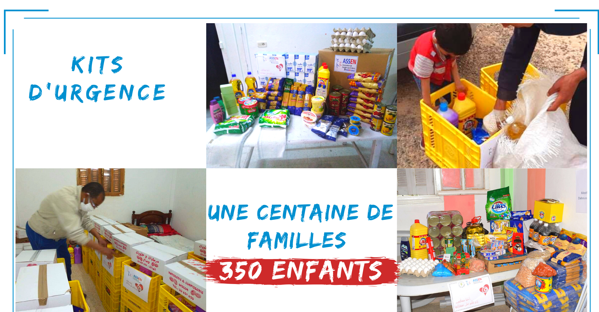

→ The Covid-19 has not stopped shaking the whole world for 2 months, impacting the economic, health and social situation. In Tunisia, the pandemic is evolving every day and the toll is getting worse and worse. We offer our deep condolences to the relatives of the victims and we greatly support them in this difficult situation.
An essential collective initiative to respond quickly to the health emergency. A collective of Tunisian associations, in collaboration with the Tunisian authorities and volunteers from Europe and Tunisia, are working to implement means and resources to provide support to all Tunisians in this period of health crisis. Thus, part of this collection was made available to meet the urgent needs raised by partner organizations.

Our field team made medical equipment available. This equipment is composed of: 40 FFP2 masks, 30 protective glasses, 40 boxes of 50 3-ply masks and 100 sterile gloves with a total value of 3,999 Dinars.
About 100 families, or 350 children, benefited from emergency food and hygiene kits for two months.
A hospital received a new dialysis machine with a total cost of 69,000DT intended for the management of patients with renal failure.
we have responded to several emergency calls and continue to respond more than ever to this National and global health emergency challenge. In particular, we are adapting our fundraising target to date to 25,000 euros in order to be able to further extend our actions in a moment of unprecedented solidarity in the face of an unprecedented emergency.
8 years of commitment and action
Happiness is shared!
The Children's Support Association was created on November 5, 2010 by young Tunisian students in Paris.
These young students wanted to help Tunisian children, in particular for orphan children at the SOS Mahres center.
This momentum of solidarity was accentuated by the Tunisian revolution which made it possible to discover the misery of the regions and to be able to launch development projects there in terms of education, social, local economy and health. . We work in the field all over Tunisia and operate mainly in interior regions.